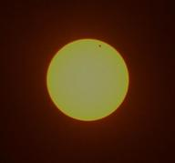
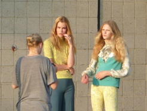

Visual Blog
| Manhattan Flyby | Telescope Experiment | Central Park's Secret | ||
|  | ||||
| In Olympic Champ's Company | Transit of Venus 2012 | 30
Second Advantage Over The WholeWorld |
||
|  | ||||
| Models At Work |
About Oscar
 Oscar Sierra Sierra* is a Polish born, American mathematician (PhD from
New York University and, effectively, Erdös
No. 2)
who worked for over a decade at prominent Wall Street institutions like
Goldman Sachs, Credit-Suisse Securities, and Royal Bank of Canada. The
main focus of his work involved mathematical and software aspects of
statistical arbitrage, program trading and securities lending. He has
also worked at the New York Stock Exchange at their offices in Paris
and New York on integration of certain high-frequency data management
tools. Recently, Oscar taught undergraduate mathematics and computer
science at Fordham University.
Oscar Sierra Sierra* is a Polish born, American mathematician (PhD from
New York University and, effectively, Erdös
No. 2)
who worked for over a decade at prominent Wall Street institutions like
Goldman Sachs, Credit-Suisse Securities, and Royal Bank of Canada. The
main focus of his work involved mathematical and software aspects of
statistical arbitrage, program trading and securities lending. He has
also worked at the New York Stock Exchange at their offices in Paris
and New York on integration of certain high-frequency data management
tools. Recently, Oscar taught undergraduate mathematics and computer
science at Fordham University.
Always fascinated with bird’s eye views, and the
instinctive fear high altitudes instill in us, he started his aviation
adventure with the Accelerated Free Fall skydiving course in Perris,
California, obtaining his A license in 2000, and performing the total
of 66 jumps. In 2004, after a year and three months of committed work,
he obtained a private pilot
license at Teterboro, NJ, and has since logged 900 landings and close
to 400 hours of flight time. This flight time does not include the very
short flights he performed in college as a high jumper when he
reached the personal best of 6 ft and 9.1 in (206cm).
Currently, Oscar is in the final stages of two long term projects which he intends to describe on these pages. In the meantime, please enjoy some visual stories Oscar captured with the help of his camera.
* - pseudonym
Comment
Thank You For Your Feedback!
Your message and e-mail address are confidential.
Copyright
© 2013 Oscar Sierra Sierra.
All Rights Reserved.